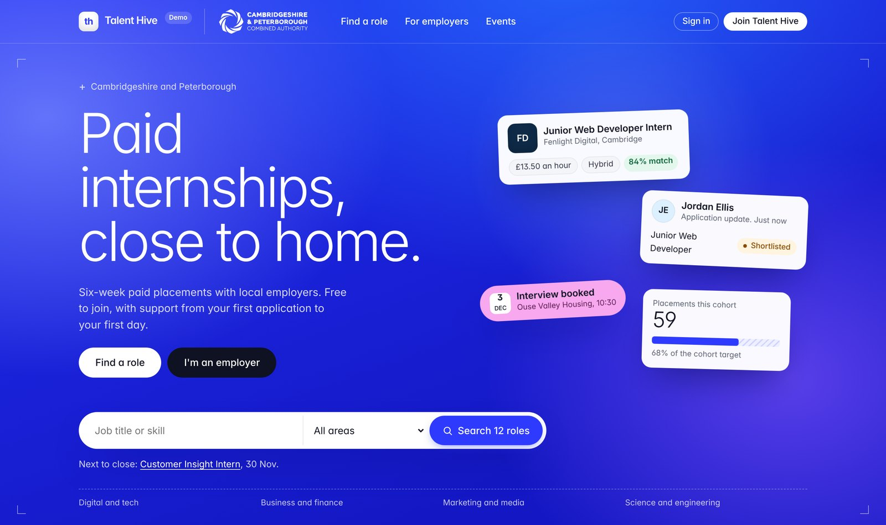
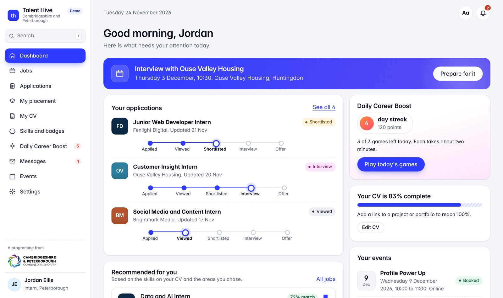
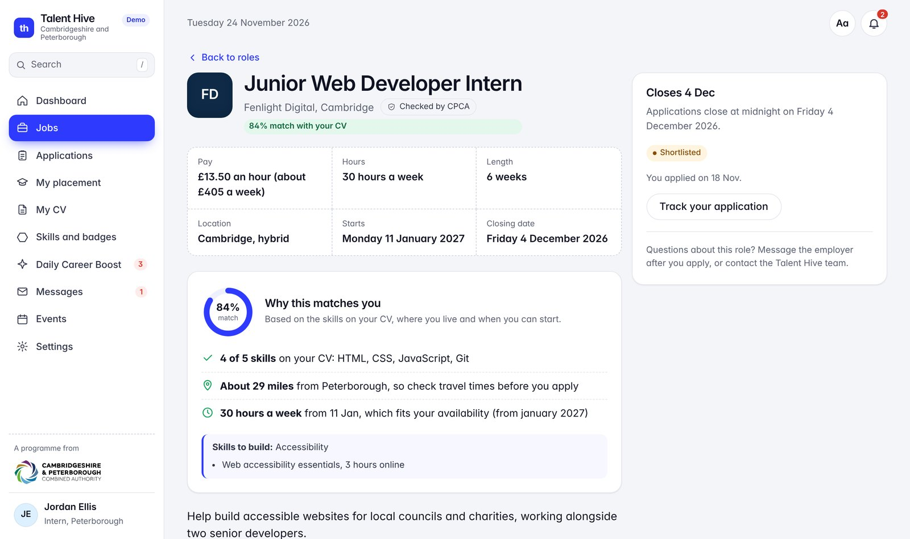
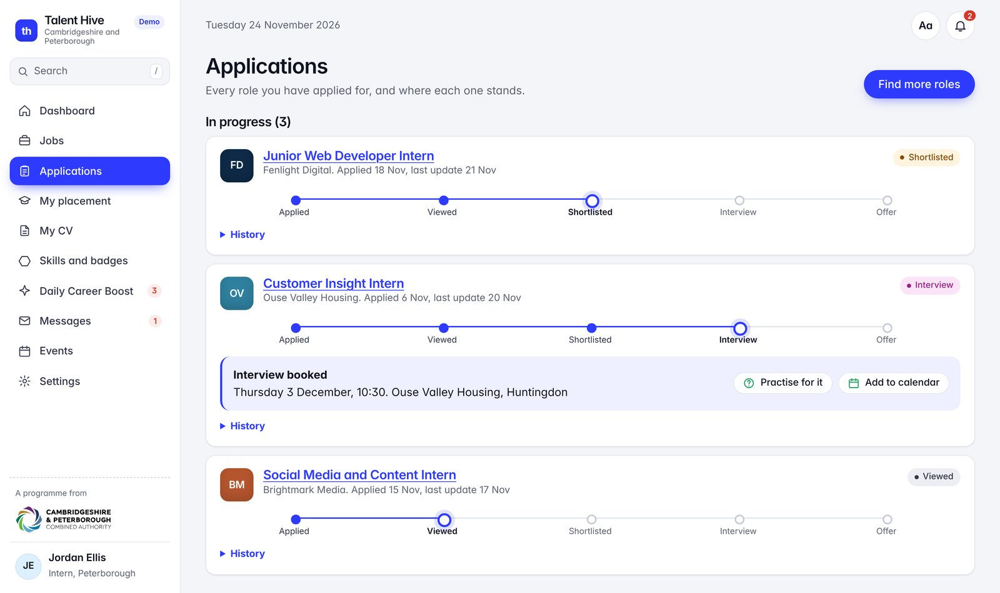
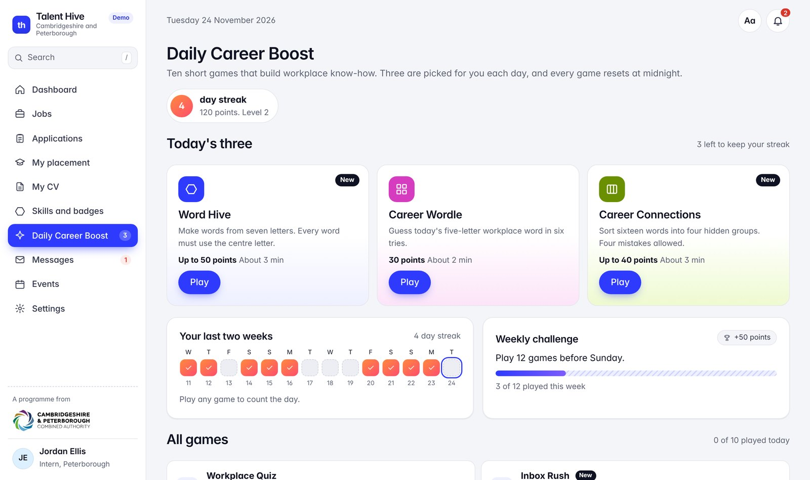
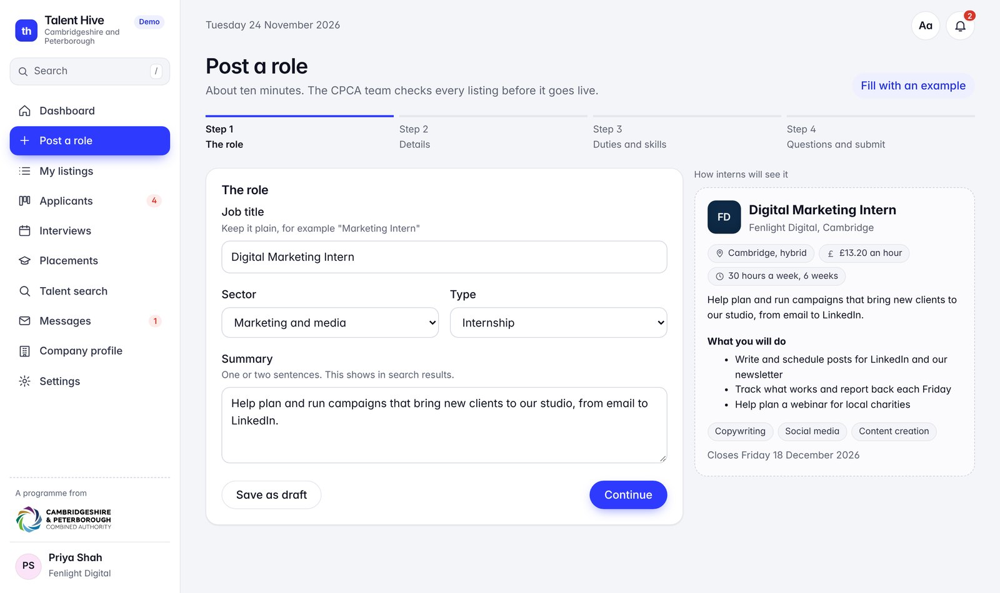
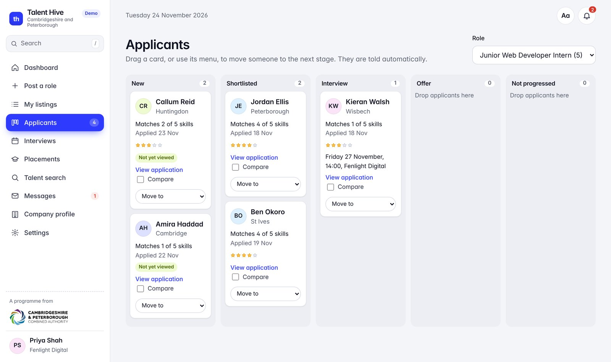
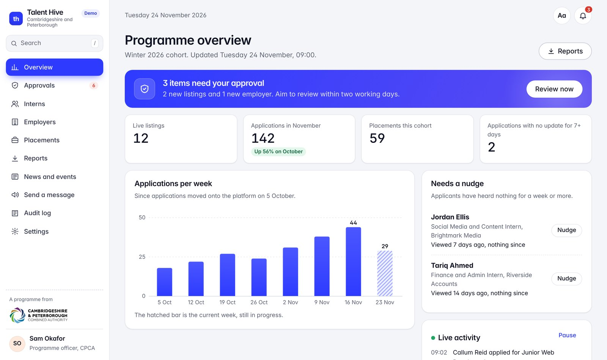
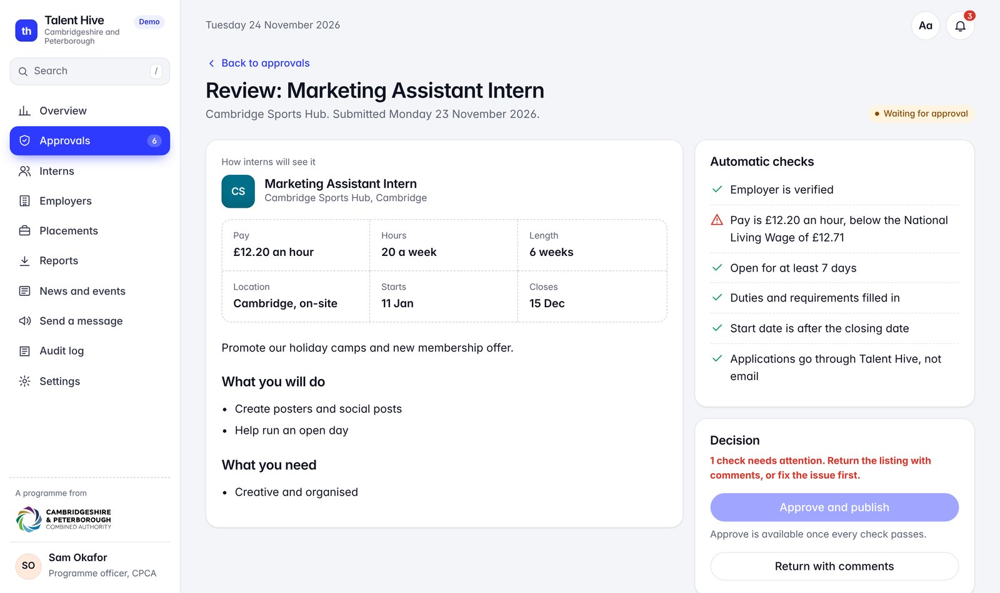

Part 2 describes the working demo as it stands today, with a link to try every feature. Part 3 sets out how the full platform would be built. The appendices hold the evidence behind it.
Talent Hive runs today on My Skills Pass, a digital badge platform that has been stretched into a job board. Vacancies are posted as news items in a sidebar, there is no apply button, and employers have no space of their own. A walkthrough of the live site found twelve problems, four of which stop interns getting placed (Appendix A).
The demo shows what Talent Hive could be instead: one platform with its own front door for each person involved. Interns search paid roles, apply in a few clicks and always know where they stand. Employers post roles and manage applicants in their own portal. The CPCA team approves listings, checks pay automatically and reports on the programme from one dashboard.
The demo is live and clickable, with sample data. Anyone can switch between the four views and follow the whole loop, from an employer posting a role to an intern starting a placement, in about five minutes.
Building it for real means a standard web application hosted in the UK, keeping Open Badge Factory so no earned badge is lost. A pilot cohort could use it after about 13 weeks, with full switch over around week 25 (section 3.9).

Figure 1. The public home page of the demo.
2The demo today
2.1What it is and how to use it
The demo is a complete front end for the new Talent Hive, running in the browser with invented employers, interns and roles. Nothing is sent to a server and every change resets when the page reloads, so it is safe to click anything.
The dark bar along the top of every page is the presenter's control panel. It is there to run the demo and is not part of the product design.
Control
What it does
View as
Switches between Visitor, Intern (Jordan Ellis), Employer (Priya Shah at Fenlight Digital) and CPCA team (Sam Okafor). Each view has its own menu and dashboard.
Take the tour
A ten step guided tour that moves between the views and highlights one feature at a time. The page is locked in place while it runs.
About
A page listing the twelve problems with today's site, each with a Show me link to the fix in the demo.
Reset data
Puts every listing, application and message back to its starting state.
The sample data covers 13 employers, 15 roles (12 live, 1 draft and 2 waiting for approval), 9 interns and 13 applications in the winter 2026 cohort. The demo's date is fixed at Tuesday 24 November 2026, so the dashboards always tell the same story.
2.2Visitors
Anyone can browse roles without an account. The home page opens with a search bar and the eight sectors, each showing how many roles are open, rather than a news feed.
Feature
What it does
Try it
Jobs board
Keyword search, filters for area, sector, workplace, type and pay, sorting, and a map of where the roles are.
Figure 2. The jobs board. Filters sit on the left and every role shows its pay, hours and closing date.
2.3Interns
The intern view is built around one question: what should I do next? The dashboard leads with the most important thing, here a booked interview, then shows each application's progress, today's games and roles that match the intern's CV.

Figure 3. Jordan's dashboard, leading with an interview booked for 3 December.

Figure 4. A job page seen by a signed in intern, with the reasons behind an 84% match.

Figure 5. The applications tracker. Each role shows its stage and history and, once an interview is booked, a link to practise for it.
Feature
What it does
Try it
Matching
Every role shows a match score. The job page explains it: skills in common, travel distance, hours against availability, and what to learn to close the gap.
Ten short games give interns a reason to come back every day, and each one teaches something an employer will notice. Three are featured each day, every game resets at midnight, and progress builds a streak, levels and achievements. Results can be copied and shared without giving the answers away.

Figure 6. The games hub, with today's three, a two week streak calendar and the weekly challenge.
Game
What it teaches
Try it
Word Hive
Vocabulary. Make words from seven letters on a honeycomb, always using the centre letter, and climb the ranks.
Figure 7. Word Hive, the signature game. The theme of today's letters is getting placed.
2.5Employers
Employers get their own portal instead of emailing roles to CPCA. Posting a role takes about ten minutes, and every applicant is managed in one place.

Figure 8. Posting a role. The preview on the right shows exactly what interns will see.

Figure 9. The applicant pipeline. Moving a card changes the applicant's status and tells them automatically.
Feature
What it does
Try it
Post a role
A four step form with a live preview and the option to save a draft. Pay below the National Living Wage (£12.71 an hour) is refused before the listing reaches CPCA.
Every role with its status, views and applicants. Each live role has insights: views per day, how many viewers applied, where applicants found it and which skills they bring.
Drag applicants between New, Shortlisted, Interview, Offer and Not progressed, or use the menu on each card. Rate them, compare up to three side by side and keep private notes.
The CPCA view replaces manual tracking with one dashboard for the whole programme. It shows what is waiting for approval, which applications have stalled and where placements are happening across the region.

Figure 10. The programme overview for the winter 2026 cohort.

Figure 11. Reviewing a listing. The automatic checks have caught pay below the National Living Wage, so it cannot be approved until the employer fixes it.
Feature
What it does
Try it
Approvals
New listings, new employers and new intern sign ups in one queue. Each listing is checked against the programme rules before staff approve it or return it with comments, and interns are confirmed as eligible here.
Live listings, applications, placements and stalled applications, with a weekly chart, a live activity feed, a map of the region and a cohort timeline.
A few things work the same way everywhere, so people only have to learn them once.
Feature
What it does
Search
Press / or Ctrl K on any page to jump to a page, role, person or employer.
Notifications
A bell on every dashboard lists updates such as a status change or a new applicant, each linking to the page concerned.
Display settings
The Aa button sets text size, an easier reading typeface (Atkinson Hyperlegible), higher contrast, reduced motion and dark mode. Choices are remembered between visits.
Help
A help button on every page with answers to common questions and a message form.
CPCA branding
The CPCA logo sits in the header, footer, menus and sign in page. While this is a demo, the top bar marks every page as a demo and the footer says it is not an official CPCA website.
Phones
Every page works on a 390 pixel wide screen, including posting a role, the applicant pipeline and every game.
2.8What is real and what is simulated
Everything on screen can be clicked and works, but the services behind it are stand ins. Sign in is a choice of demo person with no password, and all data lives in the browser until the page reloads.
No emails, texts or calendar invites are sent. They appear as in-app notifications or a downloaded calendar file instead, and PDFs come from the browser's print option. The live activity feed, charts and map are drawn from sample data, and Companies House numbers are checked for their format only. Section 3.1 sets out how each of these becomes real.
2.9Five-minute walkthrough
This route shows the whole loop in order. Press Reset data first if the demo has been used already.
Visitor. On the home page, pick Digital and tech, then open Junior Web Developer Intern to show the fact box and the Apply panel.
Intern. Switch to Intern. The dashboard leads with Jordan's interview. Open Jobs, then Data and AI Intern to show why it matches. Apply, first sending the form empty to show the error messages.
Tracking. Open Applications to see the new application alongside Jordan's others.
Employer. Switch to Employer, open Applicants and choose Data and AI Intern from the role menu. Move Jordan to Interview and offer three times.
Posting. Go to Post a role, choose Fill with an example and try a pay of £12.00 to show the National Living Wage check. Correct it and submit.
CPCA team. Switch to CPCA team and open Approvals. Approve the new role, then open Marketing Assistant Intern to show approval blocked by the pay check, and return it with comments.
Close the loop. Back as the intern, the new role is on the jobs board and the Data and AI application is at Interview, with times to pick. Finish with a round of Word Hive.
2.10How the demo was built and tested
The demo is written in plain HTML, CSS and JavaScript with no framework. A small build script joins the source files into a single page of about 400 KB, which is hosted free on GitHub Pages. It sets no cookies and has no tracking; the browser only remembers display settings and whether the welcome message has been seen.
Each release is checked by automated browser tests. They open all 58 pages and views on a desktop screen and a phone screen, and fail on any script error or anything wider than the screen. Scripted runs then click through the main journeys end to end, including applying, posting, approving, every game, the guided tour and dark mode.
3The finished platform
The full build keeps the demo's design and journeys and replaces every stand in with a real service. The screens people have already clicked through become the product, so there are few surprises between demo and launch.
3.1From demo to full platform
Area
In the demo
In the full platform
Accounts and sign in
Pick a demo person, no password
Passwordless email links for interns and employers, Microsoft sign in for CPCA staff
Data
Held in the browser, reset on reload
A PostgreSQL database hosted in the UK, backed up daily, with a history of every change
Jobs board
Search and filters over 12 sample roles
Server search across every live role, shareable links and job alerts by email
Applying
Saved CV, cover note and screening questions
The same, plus CV uploads, eligibility checks and duplicate checks
Notifications
Shown in the app only
Email and text through GOV.UK Notify if CPCA is eligible, otherwise a commercial provider, following each person's preferences
Interviews
Offered times and a calendar file
Calendar invites, reminders and video links where needed
Employer checks
Companies House number checked for format
A live Companies House lookup, then a verification step by CPCA
Badges
Sample badges
Issued and verified through Open Badge Factory, with existing badges carried over
Daily Career Boost
Ten games with fixed daily puzzles and a sample leaderboard
New puzzles every day from the server, real leaderboards and badge awards
Placements
Sample hours, goals and check ins
Hours approved by the employer, check ins visible to CPCA and a certificate issued at the end
Reports
Charts and a CSV from sample data
Live figures, funder report templates and scheduled exports
Programme rules
Saved in the browser
Managed by CPCA administrators, with every change in the audit log
Messages
Sample threads
Real messaging between interns, employers and CPCA, logged for safeguarding
3.2How it fits together
One web application serves all three groups of users from a single database. It connects to four well established outside services, one of which, Open Badge Factory, CPCA already uses for badges.
Figure 12. One platform serves interns, employers and CPCA staff from a single database.
Every screen in the demo maps onto the web app. Every rule the demo checks, such as minimum pay, moves into the API so it cannot be bypassed.
3.3Site structure
One platform replaces today's two near identical spaces, Talent Hive Starter and Talent Hive Connect. It has a public site and three signed in areas, each with its own menu. Starter and Connect roles become one jobs board with a filter for programme type.
Figure 13. Four doors on one platform, each with its own menu on shared data. Forty pages in all.
3.4The core journey: posted to placed
The whole loop that happens by email today runs inside the platform, so nobody has to chase anyone for an update. Every step is recorded, which is what makes the reporting in section 3.10 possible.
Figure 14. A role goes from posted to placed in six steps. Every arrow is a status change the other side sees straight away.
If CPCA returns a listing, the employer edits and resubmits it. Interns who are not progressed hear the same day, with feedback and links to similar roles.
3.5Technology
The recommendation is a standard, widely supported web stack, so CPCA is not tied to one supplier and any competent team could pick it up later.
Layer
Recommendation
Why
Front end
Next.js with React and TypeScript
Fast pages, strong accessibility tooling and a large pool of developers
Back end
Node.js API (NestJS or Next.js server routes)
One language across the whole stack
Database
PostgreSQL
Reliable, and relational data suits applications and reporting
Search
PostgreSQL full text search first, Meilisearch when listings grow
Cheap to start and easy to upgrade
Sign in
Passwordless email links for interns and employers, Microsoft sign in for CPCA staff
Fewer forgotten passwords, and staff use their work accounts
Files
S3 compatible storage with virus scanning
Safe uploads of CVs and logos
Notifications
GOV.UK Notify for email and text, or a commercial provider
Status changes reach people without them signing in
Badges
Open Badge Factory API
Existing badges carry over
Hosting
AWS London or Azure UK South
Data stays in the UK
Analytics
Cookie free analytics plus reporting views in the database
Basic statistics without a consent banner
3.6Data, privacy and security
The data model is small and mirrors the demo's sample data, so the screens already show how each record is used.
Record
What it holds
Person
One per user, with a role: intern, employer user or CPCA staff
Intern profile and CV
CV sections, skills, availability, and whether the intern can be found in talent search
Organisation
An employer, its users and whether it has been verified
Listing
Role, pay, hours, location, dates, screening questions and status (draft, waiting for approval, live or closed)
Application
An intern's application to a listing, with an event recorded for every status change
Placement
Created when an offer is accepted, with dates, hours, goals and check ins
Supporting records
Badges, messages, event bookings, game results and the audit log of staff actions
UK GDPR applies throughout. A data protection impact assessment comes before the build, along with a clear privacy notice and agreed retention periods, for example removing inactive intern data after a set time. People can download their own data, as the demo already shows.
Employers only see applicants to their own roles, or interns who have chosen to appear in talent search. Some interns may be vulnerable adults, so messages are logged and can be reported. The service should hold Cyber Essentials Plus and pass a penetration test before going live, with rate limiting and audit logs in place from the start.
3.7Accessibility
As a public sector body, CPCA must meet the Public Sector Bodies Accessibility Regulations 2018. Government monitoring has tested sites against WCAG 2.2 at levels A and AA since October 2024, so that is the standard for the build (GOV.UK).
The demo already follows the core rules: readable text contrast, visible focus, full keyboard use, a label on every field and status never shown by colour alone. The full build adds screen reader testing in every sprint, a published accessibility statement and an independent audit before launch.
3.8Moving off My Skills Pass
The switch happens over one cohort, so nobody is left without a working site.
Run both sites side by side for the pilot cohort, with new listings posted only on the new platform.
Import intern profiles and badge records, keeping Open Badge Factory as the issuer so every earned badge stays valid.
Link each intern's old CV pages from their new profile until they have rebuilt their CV.
Redirect the old Talent Hive spaces once the pilot cohort is placed.
3.9Delivery plan
A pilot cohort could use the new site after about 13 weeks, with full switch over around week 25. These are early estimates to be firmed up in discovery, and CPCA signs off each gate on the plan before the next phase begins.
Figure 15. Interns use the new site from week 14, with full switch over by week 25. An estimate for a team of five.
The suggested team is a product lead, a UX and UI designer, two full stack developers and a part time tester covering quality and accessibility. A named programme owner at CPCA signs off each gate.
3.10Measuring success
None of these can be measured today, because applications happen by email outside the platform. Measuring them at all is the first win. The targets are proposals to agree with CPCA.
Measure
Proposed target
Applications made inside the platform
All listings
Median time from opening the jobs board to a submitted application
Under 3 minutes
Median time for an employer to post a role
Under 10 minutes
Listings with pay, hours, location and closing date filled in
All listings (required fields)
Applications with a status update within 10 working days
90%
Interns returning each week while they search
40%
Placements per cohort
A baseline from the pilot, then an agreed growth target
Blocking accessibility issues at WCAG 2.2 AA in the launch audit
None
3.11Risks
The biggest risk is building a better site that nobody moves to, so the pilot and the switch over matter as much as the design.
Risk
How it is reduced
Employers keep emailing CPCA instead of using the portal
CPCA posts the first listing with each employer, then hands over
Effort is duplicated while both sites run
One pilot cohort only, with a fixed switch over date
Badge history is lost in the move
Open Badge Factory stays the issuer, and the import is tested early
Accessibility slips late in the build
Screen reader and keyboard testing every sprint, not just before launch
AProblems with today's site
These twelve problems were found in a read only walkthrough of myskillspass.uk on 24 November 2026, signed in as an intern. The demo's About page links each one to its fix.
Area
What happens today
Why it matters
Severity
Finding jobs
Vacancies sit in the home page News sidebar, mixed with welcome posts and event promotions. There is no search, filter, sector, pay field or closing date.
Interns have to scroll a narrow column and read every post to find a relevant role.
High
Applying
There is no apply button. The Rozier Group post has no contact route at all, and others say to email a named person.
Applications leave the platform, so nobody can see who applied, and some roles cannot be applied for.
High
My applications
The page lists badge applications (Week 1 Survey, Profile Creator, Digital CV Creator), not job applications.
The name promises the thing users need most and shows something else.
High
Employers
There is no employer portal. Employers sit in the same Members grid as interns, and their roles are posted as news.
Employers cannot post, edit or review applicants themselves, so CPCA staff do it by hand.
High
Messages
The Message Tool lists emails, most with blank subject lines. The preview opens a broken image.
Users cannot tell messages apart or read them.
Medium
Links
Opening a page address directly returns a plain 404 Not found page.
No page or job can be shared, bookmarked or linked from an email.
Medium
Two spaces
Talent Hive Starter (527 members) and Talent Hive Connect (198 members) have the same menus and near identical welcome content.
Users do not know which space they are in or why the jobs differ.
Medium
CVs
CVs are free form Pages listed publicly under Community, some titled Untitled.
Employers cannot search or compare candidates by skill, location or availability.
Medium
Layout
Three competing columns, an all capitals sidebar, small grey text, and key actions pointed at with rows of arrows.
There is no single clear next step, and the pages are hard to use on a phone.
Medium
Onboarding
The home page asks users to search the news feed on the right, and the Connect video list starts at step 2.
First impressions feel unfinished.
Low
Text
Job summaries show raw HTML code, such as & in place of &.
It looks broken and untrustworthy.
Low
Community map
A world map for a programme limited to Cambridgeshire and Peterborough.
It adds noise without helping anyone.
Low
Some things work well and are kept: the Get Started badge journey, Profile Power Up sessions, digital badges as proof of skills, and the welcome videos.
BWho the platform serves
The site has three audiences with different jobs to do. Today it only really serves the first, and not well.
Audience
Who they are
What they need to do
What good looks like
Interns and jobseekers
Eligible residents of Cambridgeshire and Peterborough looking for paid six week internships, apprenticeships or work experience. Many are graduates or career changers, and some have additional needs.
Get ready with a profile, CV and badges, find relevant roles, apply, track progress and prepare for interviews.
Finds a suitable role in under 2 minutes and applies in under 3, from a phone, and always knows where each application stands.
Employers
Local businesses, charities, schools and universities offering placements. Often small teams with no HR department.
Register and get verified, post a role, review and shortlist applicants, message them and confirm a placement.
Posts a role in under 10 minutes and sees suitable applicants within days, without emailing CPCA.
CPCA programme team
Staff who run the internship programme and report on it to funders.
Approve employers and listings, check eligibility, nudge stalled applications, run events and report outcomes.
Sees every listing, application and placement in one place, and exports a funder report in one click.
Careers advisers and training partners are a likely fourth audience later, with read only access to the interns they support.
CDesign approach and visual language
A few principles shaped every screen. Jobs are the product, so the jobs board is a full page and never a feed in a sidebar. Each screen has one clear next step and one main button. Interns, employers and CPCA staff each get their own menu, built on the same data. Labels use plain words, so Applications always means job applications, and every flow works on a phone.
The look follows design references chosen for the project: an electric blue hero with light, oversized type, crisp white dashboards, pastel status tags and hatched chart fills. Dashed hairline grids and a dotted map of the region carry through the whole site.
Element
Value
Used for
Ink
#0F1222
Text, dark sections and secondary buttons
Hive blue
#2E3BFF
Main buttons, links, active menu items and the hero
Violet
#5A4BF2
Statistics sections and gradients alongside the blue
Mint
#1FA463
Success states such as approved, shortlisted and placed
Surface
#F4F5F8 and white
Page background and panels
Typeface
Geist, with Atkinson Hyperlegible for Easier reading
One clean family for the product, and a typeface designed for readers with low vision when they need it
CPCA logo
Full colour on light pages, white on the blue hero, white lettering in dark mode
Shows the platform belongs to CPCA
The tone is second person, short sentences and no jargon: Apply now, not Submit expression of interest.